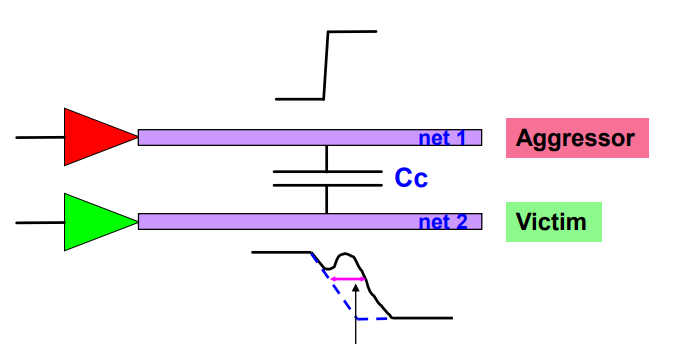
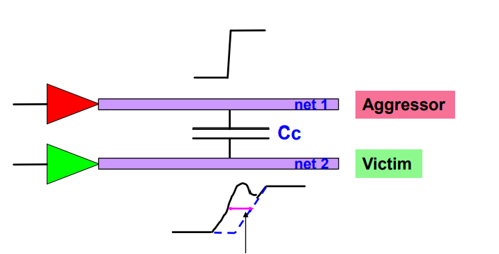
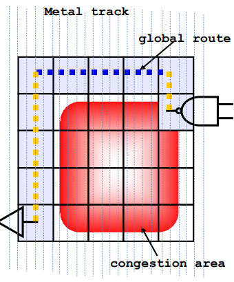
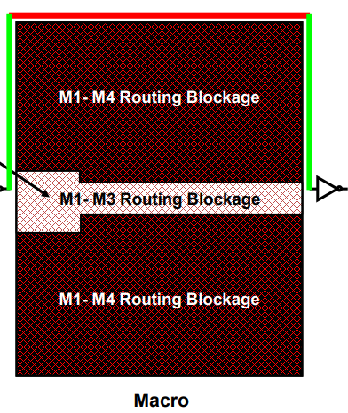

ICC-Route
本文最后更新于：2023年11月8日 下午
1. 关于 Route
- Route的主要目标
- 满足timing的要求，如setup/hold/removal/recovery等。
- 满足DRC的要求，例如：transition/capacitance，以及不能有short/open。
- Route 绕线规则
standard cell 的 pg rail可以采用M1,M2，M3。standard cell 的pin脚一般采用M1.
Width and Spacing Rule
- 原有一个最小宽度和间距对应的规则要求，如下图蓝色模块所示。
- 但是若两侧金属宽度增加，那么间距也需要相对应的增加。即Width-Based Spacing。
- 原有一个最小宽度和间距对应的规则要求，如下图蓝色模块所示。
需要满足DRC。
2. Crosstalk
- Crosstalk的危害
- delta delay
如下图所示，串扰可能会影响受害者信号，导致增加/减小延时。
 延时的改变可能会导致setup/hold出现违例，使电路无法正常工作。所以无论是ICC/PT，都需要将delta delay的延时考虑在内。
可以使用下面指令查看delta_delay值的大小。
1
report_timing -crosstalk_delta ...可能Launch路和Capture路都有delta delay的影响，工具会根据是setup/hold分析，决定一个最保守的加/减法运算于原先时序路径上。
- glitch/bump
- Crosstalk导致的glich/bump可能会出现Logic Failure，可能会进一步导致芯片功能的错误。
- 所以在PT的时候，需要去考虑signal integrity。在后面的文章有详细介绍。
- delta delay
- 如何避免/修复Crosstalk
- Crosstalk 影响相关因素
- 与Aggressor和Victim驱动单元的驱动能力有关，Aggressor的驱动能力越大，Victim的驱动能力越小，那么对Victim的影响就越大，反之亦然。
- 所以可以将Aggressor的驱动size down，而Victim的驱动size up。但是size down可能会出现时序 violation。
- 与两根金属线之间的耦合电容相关，而这个电容值的大小与两条金属线长和间隔距离相关。
- 所以可以将长长的金属线打断，中间插入buffer。
- 与Aggressor和Victim驱动单元的驱动能力有关，Aggressor的驱动能力越大，Victim的驱动能力越小，那么对Victim的影响就越大，反之亦然。
- 对一些关键的信号加shielding/NDR。
- shielding可以加在较强/关键信号线的两侧，接上电源线/地线（一般为地线），此时信号线之间的耦合电容变成信号线和地线之间的电容。
- 缺点如下
- shielding导致一个特定区域走线变少，导致成本提高很多。
- 上面也有提到，信号线之间的电容变成了信号线和地之间的电容，而这个接地电容会增加信号线的负载，可能会对时序有负面影响。
- NDR，一般采用增大线宽和间距，并使用高层金属走线，也会导致成本的增加。
- 在route_opt之前设置下面指令
1
2
3
4
5
6
7set_si_options -static_noise true \
-static_noise_threshold_above_low 0.35 \
-static_noise_threshold_below_high 0.35
set_si_options -delta_delay true \
-route_xtalk_prevention_true \
-route_xtalk_prevention_threshold 0.25 \
-analysis_effort medium
- Crosstalk 影响相关因素
3. Route 流程
3.1 Initial Route
Pre - Route 基本过程
（1）Global Route
Router会将整个区域划分为若干个大小相等的小格子GRC(Global Routing Cell)，每个小格子能通过的绕线资源是有限的。 如果超过这个能承受的值，就认为是发生阻塞。
GR阶段，router会绕开congested区域，而且也会绕开P/G-Shape(Rings/Straps/Rails)和Routing Blockages。

（2）Track Assign
- 分配track，并尽量走较长的直线，避免多处拐弯。尽量减少通孔数量。
- TA这步并不做DRC检查或修正。
（3）Detail Route
- 主要修复TA阶段产生的physical drc violation。
- route通过遍历一个个特定大小的区域(SBox)去修复drc。
- 主要修复TA阶段产生的physical drc violation。
（4）Search & Repair
- 主要用于修剩下的drc Violation。算法是不断的增加SBox的Size，去遍历修。
- 即使Route的DRC Violation都清掉了，之后还是需要做Signoff的DRC。原因有下面三点：
- Routing DRC是complete technology DRC的子集。
- 我们需要统一Routing DRC和complete technology DRC的版本，可能存在两个版本不一致的情况。
- ICC中placement和routing使用的都是一个FRAM view，而不是CEL view；可能有些细节并没有被检查到，所以之后还需要CEL View进行signoff DRC检查。
- 没必要去读入CEL view的原因是：这两步没必要去读入太多细节信息，消耗run time。
上面介绍Pre-Route的四步，可以使用下面命令实现。
1
route_opt -initial_route_only- 这一阶段不需要考虑timing相关，需要考虑是否存在congestion。
- 在该指令运行之前还需要指令进行下面的一些设置。
route_opt -initial..前的设置
- （1）Antenna rule的设置
- Antenna rule.tcl来源于stdcel厂商；因为天线效应和stdcell的设计相关。
- 使用下面指令在ICC阶段就设置，在Signoff的physical verification阶段也需要去检查一下天线效应。
1
2set_route_zrt_detail_options -antenna true
source antenna_rules.tcl
- （2）Zrt Router 设置
- 大部分使用Synopsys RM Flow的设置。
- 其中RM(Reference Methodology)是说Synopsys创建的一个包含整个ICC流程的参考脚本。
- 需要将之前设置好的一些物理约束source进来，例如：layer的设置等。
- 大部分使用Synopsys RM Flow的设置。
- （3）Routing Blockage
- 使用gui界面指定哪个金属层的什么区域不让绕线，可以导出脚本，之后修改脚本坐标即可。
- （4）Routing Guide
可以指定特定金属层不route和preroute；设置特定金属层走preferred direction，或者switch preferred direction；设置route track utilization；以及其它一些更为详细的走线约束。
- preroute为route之前先布好pg rail/strap/ring的线。
- 每层金属的方向是可以指定的，都是vertical,horizon间隔。preferred direction是指该层金属的方向。而Switch则是改变部分区域的金属走线方向，与设前面指定的不一致。
举例如下图，macro之间的channel只能横向走线，只能走M4，但是M4是纵向的，所以可以使用switch，更改这部分区域M4的走线方向。

针对出现的congestion，制定合理的routing guide指定部分区域走线方向，以及区域走线利用率，来将绕线阻塞的地方分配一些绕线资源到较为“空闲”的地方。
- （1）Antenna rule的设置
route_opt -initial..后的操作
- 查看 DRC violation/antenna violation等。
- 修出现的physical violation
- 可以首先检查short区域，short很大可能是因为congestion导致的，该区域可能会出现很多其它非short的drc violation。
- 可以使用Global Route Congestion工具快速看修完之后congestion的结果。
3.2 PostRoute Opt
- 进入此步的前提是DRC violation，congestion等问题都大致解决了，才可以进行后面的操作。
- 该步骤使用的scenario的数目和PostCTS的数目是差不多的。margin可以根据实际情况进行调整或保持不变，主要看这步和前一步的correlation。
- 该步骤主要使用route_opt指令，用于修复timing/drc/area/power/xtalk.
- 出现violation时，可以添加下面两个命令，进行增量优化。当数目较小时，可以手修。
1
2route_opt -incremental
psynopt